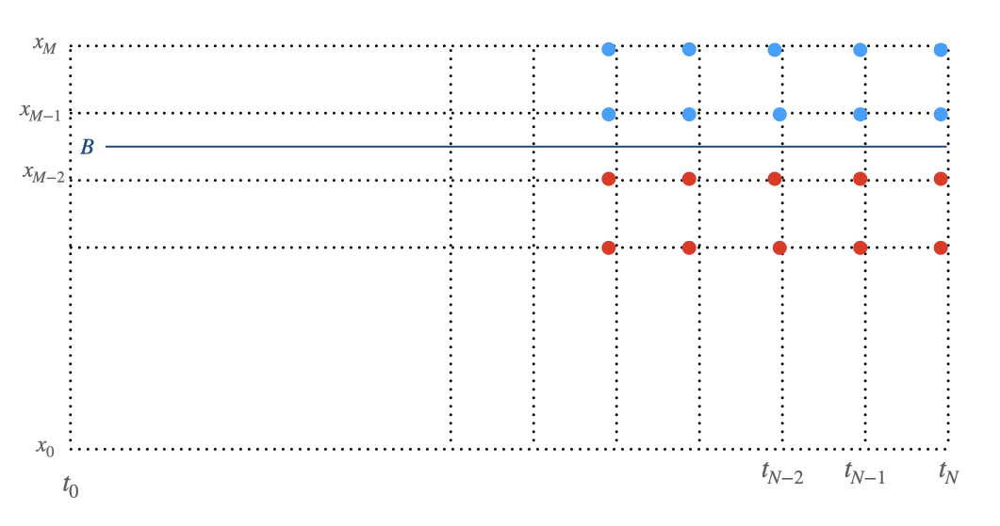

Finite Difference Method
The partial differential equation for Black-Scholes-Merton model in log scale \(x = \ln(S)\):
(1)\[\frac{\partial f}{\partial t} + (r-q-\frac{\sigma^2}{2})\frac{\partial f}{\partial x} + \frac{1}{2}\sigma^2 \frac{\partial^2 f}{\partial x^2} = rf\]
Implicit scheme
The implicit finite difference equation for the partial differential equation is :
(2)\[\alpha f_{i, j-1} + \beta f_{i, j} + \gamma f_{i, j+1} = f_{i+1, j}\]
where
(3)\[\begin{split}\alpha &= \frac{\Delta t}{2\Delta x}(r - q - \sigma^2/2) - \frac{\Delta t}{2\Delta x^2}\sigma^2 \\
\beta &= 1 + \frac{\Delta t}{\Delta x^2}\sigma^2 + r \Delta t \\
\gamma &= - \frac{\Delta t}{2\Delta x}(r - q - \sigma^2/2) - \frac{\Delta t}{2\Delta x^2}\sigma^2 \\\end{split}\]
or in the matrix multiplication form:
(4)\[\begin{split}\left ( \begin{matrix} 1 & 0 & 0 & ...& ...\\
\alpha & \beta & \gamma & 0 & ...\\
0 & \alpha & \beta & \gamma & ...\\
. & . & . & . &. \\
0 & ...&\alpha & \beta & \gamma \\
0 & ... & 0 & 0 & 1\\
\end{matrix}
\right)
\left ( \begin{matrix} f_{i, 0}\\
f_{i, 1}\\
.\\
.\\
f_{i, M-1}\\
f_{i,M}\\
\end{matrix}
\right)
=
\left ( \begin{matrix} f_{i+1, 0}\\
f_{i+1, 1}\\
.\\
.\\
f_{i+1, M-1}\\
f_{i+1,M}\\
\end{matrix}
\right)\end{split}\]
Explicit scheme
And the explicit finite difference equation for the partial differential equation is
(5)\[\alpha^* f_{i+1, j-1} + \beta^* f_{i+1, j} + \gamma^* f_{i+1, j+1} = f_{i, j}\]
where
(6)\[\begin{split}\alpha^* &= \frac{1}{1+r\Delta t}[-\frac{\Delta t}{2\Delta x}(r-q-\sigma^2/2)+\frac{\Delta t}{2\Delta x^2}\sigma^2] \\
\beta^* &= \frac{1}{1+r\Delta t}(1-\frac{\Delta t}{\Delta x^2}\sigma^2)\\
\gamma^* &= \frac{1}{1+r\Delta t}[\frac{\Delta t}{2\Delta x}(r-q-\sigma^2/2)+\frac{\Delta t}{2\Delta x^2}\sigma^2] \\\end{split}\]
the explicit finite difference equation can be also written in the matrix format:
(7)\[\begin{split}\left ( \begin{matrix} 1 & 0 & 0 & ...& ...\\
\alpha^* & \beta^* & \gamma^* & 0 & ...\\
0 & \alpha^* & \beta^* & \gamma^* & ...\\
. & . & . & . &. \\
0 & ...&\alpha^* & \beta^* & \gamma^* \\
0 & ... & 0 & 0 & 1\\
\end{matrix}
\right)
\left ( \begin{matrix} f_{i+1, 0}\\
f_{i+1, 1}\\
.\\
.\\
f_{i+1, M-1}\\
f_{i+1,M}\\
\end{matrix}
\right)
=
\left ( \begin{matrix} f_{i, 0}\\
f_{i, 1}\\
.\\
.\\
f_{i, M-1}\\
f_{i,M}\\
\end{matrix}
\right)\end{split}\]
Crank-Nicolson scheme
The Crank-Nicolson scheme is a mixture of the implicit scheme and the explicit scheme.
For simplicity, we use \(\textbf{A}\) to denote the matrix in (4),
\(\textbf{B}\) to denote the matrix in (7), and the option values at time \(t_i\) as the column vector \(\textbf{F}_i\).
Thus, equations (4) and (7) can be written as:
(8)\[\begin{split}\textbf{A} \textbf{F}_i &= \textbf{F}_{i+1} \\
\textbf{B} \textbf{F}_{i+1} & = \textbf{F}_i \\\end{split}\]
By summing up the above two equations, the iterative algorithm for the Crank-Nicolson scheme is
(9)\[\textbf{F}_i = (\textbf{A} + \text{I})^{-1}(\textbf{B} + \textbf{I}) \textbf{F}_{i+1}\]
by calculating the column vectors \(\textbf{F}_i\) backwardly with the inital values \(\textbf{F}_N\) and some proper boundaries,
the option’s present values \(\textbf{F}_0\) could be worked out.
Algorithm demonstration
